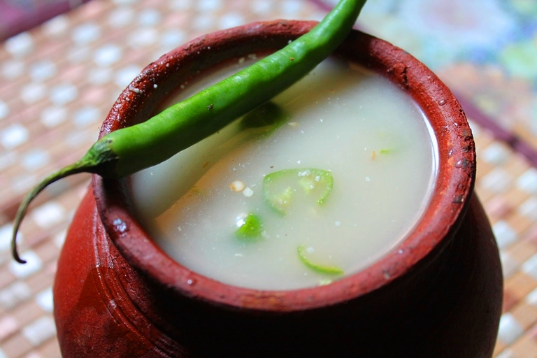

Kambu Kool

Description
Kambu Koozh is a very common breakfast in rural parts of Tamil Nadu
especially during summer months. Kambu koozh is also known as pearl millet
porridge, kambu kool, is consumed widely in South of India due to its
cooling health benefits. I have shared porridge or koozh made with whole
pearl millet and check my instant bajra porridge made with pearl millet
flour.
This is one of the traditional recipe and such a healthy recipe for
you. It is such a hot hot summer here, this koozh just cools you
instantly. I have an instant version of kambu koozh made with pearl millet
powder.
Ingredients
- Pearl Millet | Kambu
- Curd
- Salt
- Toppings
- Onion
Procedure
- Start by washing kambu rice.
- Take pearl millet in a bowl and wash it well. Wash it in multiple changes of water.
- Now add ¼ cup of water.
- Rub the water into the pearl millet. Let it soak for 1 hour.
- Take soaked pearl millet in a blender, we are going to blend this into a coarse powder.
- Don't add too much water when grinding. The mixture has to be slightly coarse in texture.
- This is the texture you want the pearl millet to be.
- Take the ground pearl millet powder in a bowl. This is your coarse pearl millet powder.